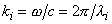
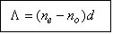

|
4. Retarders In a retarder, one of the two components of the incident electric field vector is caused to lag the other by a predetermined amount. In order to do this the light is sent normally incident upon a doubly refracting slab of material with faces parallel to the optical axis (OA) of the slab. The way to establish the phase difference between the components is as follows. Consider the birefringent slab in Fig. 24, whose optical axis (OA) is the y-direction. Since the OA is the y-axis, the index of refraction for the y-component of the field is ne and this component travels through the medium at speed v|| [see Eq. (3.1)]. The index of refraction for the x-component of the field is no and this component travels through the medium at speed vperp [see Eq. (3.2)]. The back side of the slab is the plane z = 0, and the front side of the slab is the plane z = d.
Suppose that the following electric field is traveling in the positive z-direction and is normally incident upon the slab,
where  and li is the wavelength of the incident light. The optical path length traveled by the x-component of the field as passes through the plate is nod and the optical path length traveled by the y-component of the field as passes through the plate is ned. The transmitted field, i.e., the field in the plane z = d, is therefore given by the expression
where
is an unimportant constant phase term which occurs in the both the phase of the x-component and the y-component. Eq. (4.4) can be rewritten as
where
is the total phase difference between the x- and y-components of the transmitted field and
is the phase difference introduced by the retarder. This expression can be rewritten as
where L is the difference of the optical path lengths traveled (in the retarder) by the two components of the electric field:
 (4.7) TO BE CONTINUED
|
||||||||||||||||||||||||||||||||||
| Polarization: Theory |